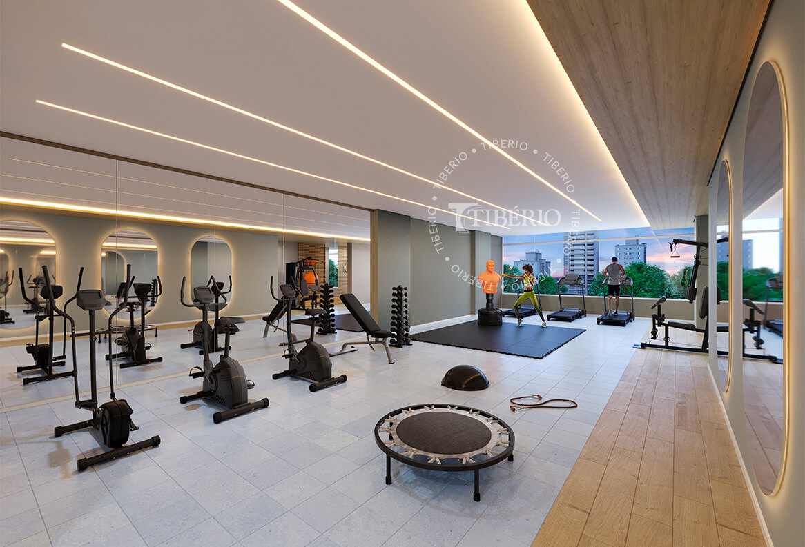
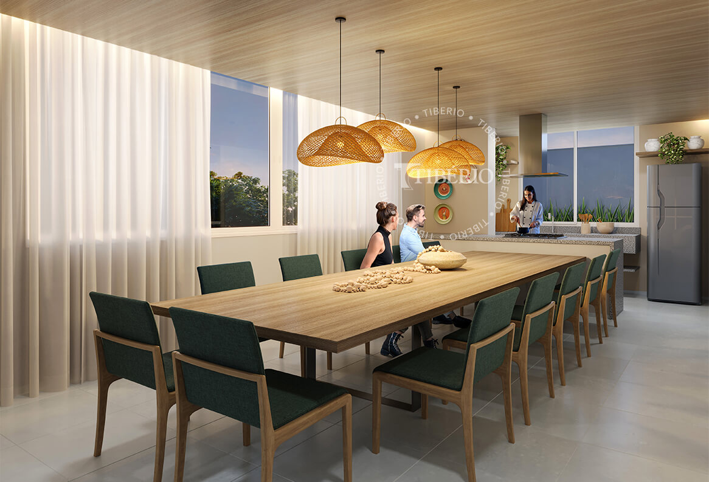

Sublime Pompéia
Apartamentos de 3 dormitórios com suíte, varanda gourmet com churrasqueira e duas vagas determinadas em um dos bairros mais valorizados da Zona Oeste de São Paulo.
Galeria de Fotos do Sublime Pompéia



Conheça o Sublime Pompéia da Tibério
O Sublime Pompéia é um empreendimento residencial da Tibério, localizado no bairro da Pompéia, na Zona Oeste de São Paulo. Esta página apresenta a tipologia de apartamentos de 3 dormitórios, com suíte, varanda gourmet com churrasqueira e duas vagas determinadas.
O empreendimento está em uma região com opções de comércio, serviços, escolas e lazer, próximo ao Allianz Parque, Shopping Bourbon, SESC Pompeia e Hospital São Camilo.
O condomínio oferece espaços de lazer e convivência, incluindo academia, áreas esportivas, espaço gourmet e ambiente dedicado aos animais de estimação.
Ficha Técnica do Sublime Pompéia
| Empreendimento | Sublime Pompéia |
| Construtora | Tibério |
| Bairro | Pompéia |
| Cidade | São Paulo |
| Tipologia | Apartamentos de 3 dormitórios |
| Metragem | 75 e 77 m² |
| Suítes | 1 |
| Vagas | 2 vagas determinadas |
| Varanda | Gourmet com churrasqueira |
| Status | Em comercialização |
Planta do Apartamento de 3 Dormitórios

Apartamento de 3 Dormitórios
Apartamento com distribuição funcional dos ambientes, suíte, varanda gourmet e integração entre sala e cozinha.

Espaço Gourmet
Ambiente planejado para reunir família e amigos com conforto.
Diferenciais do Sublime Pompéia
🚗 2 Vagas Determinadas
Mais praticidade para sua família.
🔥 Varanda Gourmet
Terraço com churrasqueira integrado à área social.
🏋 Academia
Espaço fitness para atividades físicas.
🐶 Pet Spa
Área dedicada aos cuidados com os animais de estimação.
⚽ Lazer e Esportes
Espaços esportivos e recreativos para diferentes idades.
📍 Localização
Próximo ao Allianz Parque, Shopping Bourbon e SESC Pompeia.
Localização do Sublime Pompéia em São Paulo
O Sublime Pompéia está localizado no bairro da Pompéia, na Zona Oeste de São Paulo, próximo ao Allianz Parque, Shopping Bourbon, SESC Pompeia, Hospital São Camilo, comércio, escolas e serviços da região.
Solicite Informações sobre o Sublime Pompéia
Receba informações sobre preços, plantas, disponibilidade das unidades, condições de pagamento e agende uma visita.
💬 Falar com Sandro pelo WhatsAppPerguntas Frequentes sobre o Sublime Pompéia
Os apartamentos possuem churrasqueira?
Sim. Conforme as informações desta tipologia, as unidades possuem varanda gourmet com churrasqueira.
Quantas vagas possui o apartamento?
As unidades desta tipologia informadas nesta página possuem duas vagas determinadas de garagem.
O condomínio possui lazer?
O empreendimento oferece espaços de lazer e convivência, incluindo academia, espaço gourmet, Pet Spa e áreas esportivas.
É possível utilizar financiamento?
Consulte as condições de financiamento, disponibilidade e possibilidades de utilização do FGTS conforme as regras vigentes.